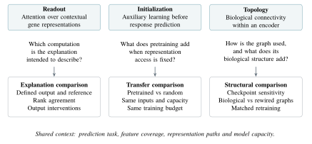
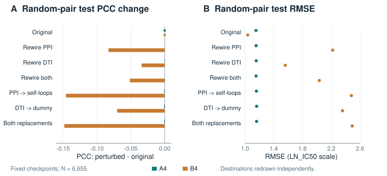
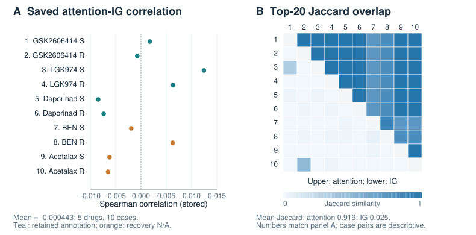
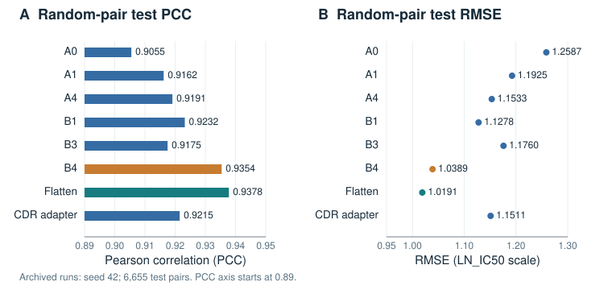

目录
癌症药物响应预测中生物先验的作用路径
叙述性综述与 GDGN 诊断案例研究
摘要
生物知识通过图连接、辅助学习目标和条件注意力进入癌症药物响应模型。明确各条路径如何参与预测，是设计可解释模型的核心问题。本文通过叙述性综述构建诊断框架，将注意力解释、预训练迁移和拓扑收益三类主张与相应比较联系起来。GDGN 回顾性案例为这一框架提供了具体经验依据。在固定检查点下，将蛋白关联输入替换为自环，使 A4 注意力编码器和 B4 双编码器的 Pearson 相关系数（PCC）分别变化 \(-0.0007\) 和 \(-0.1458\)，呈现出鲜明的关系输入敏感性差异。十个 B4 解释案例中，注意力与条件组学积分梯度的平均排序相关系数为 \(-4.43\times10^{-4}\)；不同案例反复使用相近的注意力前 20 位基因集合，平均 Jaccard 重叠系数为 0.9192，而归因集合为 0.0250。注释重建进一步展示了特征选择如何改变模型可用的先验。这些结果明确了所研究模型家族中特定架构的关系输入依赖，以及读出与归因各自的特征。该框架将这些观察与匹配迁移和拓扑比较衔接起来，为评价生物先验的贡献及其解释方式提供了统一思路。
关键词：癌症药物响应；生物先验；图神经网络；交叉注意力；积分梯度；迁移学习；诊断性评价
1 引言#
生物先验将分子测量与药物作用于癌细胞的过程联系起来。评价的核心问题是：这些先验如何参与模型预测？本文通过诊断框架，将读出、初始化和拓扑与揭示其贡献的比较相联系，结合叙述性文献综合与 GDGN 回顾性案例研究回答这一问题。最清楚的经验实例是 A4 和 B4 检查点的响应差异：将蛋白质–蛋白质相互作用（protein–protein interaction，PPI）输入替换为自环后，PCC 分别变化 \(-0.0007\) 和 \(-0.1458\)。
癌症药物敏感性基因组学数据库（Genomics of Drug Sensitivity in Cancer，GDSC）和癌症细胞系百科全书（Cancer Cell Line Encyclopedia，CCLE）等药物基因组学资源，通过连接细胞特征与实测敏感性，为响应建模提供数据基础 [1–3]。对于药物 \(d\) 和细胞系 \(c\)，预测器根据化学与细胞输入估计响应 \(y_{cd}\)。DeepCDR 将化学图与多组学表示结合，MOLI 整合细胞分子模态，DrugCell 则依据生物系统组织细胞表示 [4–6]。蛋白关联网络、药物–基因注释和注意力机制进一步提供了结合药物身份与细胞背景的路径。
本文围绕三条路径组织这一问题：读出、初始化和拓扑。注意力权重描述上下文表示的选择，输入归因描述指定输出差值的分配。预训练塑造初始表示，其下游贡献应在保持可用表示不变的条件下测量。生物拓扑组织消息传递，其预测贡献应相对于恰当的结构对照重新训练后测量。将每条路径与明确比较对应起来，能够为采用不同解释对象和实验协议的研究提供共同表述。
在所选解释案例中，B4 较强的图敏感性与近零的注意力–积分梯度（Integrated Gradients，IG）排序一致性并存。这些观察将计算依赖和解释读出与预测准确性并列。联合分析形成了本文的核心认识：生物先验的作用应通过信息路径与实验比较共同识别。图 1 概括了这一框架。

2 作为信息路径的生物先验#
2.1 化学结构、细胞关系与功能组织#
基于图的药物响应模型表示多种知识。化学图描述原子与化学键，DeepCDR 和 GraphDRP 从中学习分子表示，并将其与细胞特征结合 [4, 7]。MOLI 侧重面向二元响应分类的分模态细胞编码与融合 [5]。这些设计共同展示了化学结构与细胞测量如何为响应提供互补信息。
生物关系图通过基因产物之间的关联，以及化合物与基因之间的连接提供细胞背景。功能层级提供了另一种组织形式：DrugCell 依据生物系统构建细胞表示 [6]；DRPreter 则将融入网络信息的通路表示与 Transformer 预测器结合 [8]。模型表示的先验决定了需要开展何种科学比较。化学编码器应与其他分子表示进行比较，细胞关系图则需要控制生物连接、节点特征和编码器容量。
由响应数据构建的图具有另一种作用。GraphCDR 将药物–细胞响应表示为关系，并在响应分类中引入对比正则化 [9]。其关系信号与监督响应观测相联系，蛋白关联图则编码外部生物知识。表 1 展示了代表性方法在这一设计空间中的位置。
2.2 读出与并行路径#
注意力在不同模态之间建立了条件化接口。在 PaccMann 中，基因表达背景为化学序列特征上的注意力提供条件 [10]；在 GDGN 中，药物查询读出细胞基因表示。条件化方向决定了权重汇总的对象。在图编码器中，各值向量已经纳入关系背景，因而读出作用于学习得到的细胞状态表示。
并行编码器扩展了预测器可用的信息路径。图分支提供具有关系背景的特征，展平分支则直接访问分子测量，最终预测器能够结合两种表示。这一架构也使分支分析具有价值：图读出中的权重与完整预测器的归因，描述同一计算过程中的不同层次。
2.3 覆盖情况定义可用先验#
生物知识通过标识符映射、注释过滤，以及与实测特征全集取交集进入模型。每个步骤都决定了特定药物保留哪些可用关系。STRING 整合物理相互作用与功能性蛋白关联，DGIdb 则汇集药物–基因相互作用注释 [11, 12]。这些数据源的语义指导了对相应模型关系的解释。
因此，覆盖情况是组装后模型输入的性质。有效描述应包括映射药物数、具有被表示注释的药物数、保留的不同关系数，以及每个药物的靶点数。这将数据组装与模型行为联系起来，使分组比较具有可解释的生物含义。下文的 GDGN 覆盖重建展示了基因全集对这种描述的影响。
3 将主张与比较相联系的框架#
3.1 读出：对齐解释对象#
注意力研究为明确解释主张提供了依据。Jain 和 Wallace 考察注意力与特征重要性度量的一致性 [13]；Wiegreffe 和 Pinter 关注解释定义及考虑模型特性的对照 [14]。临床文本研究同样区分预测效用与解释支持 [15]。这些研究对药物响应建模的共同启示，是声明解释所要描述的计算对象。
简化读出可以明确这一对象。令 \(z=\sum_i a_i v_i\)，其中注意力权重和上下文值均依赖输入。求导可得
图传播允许值向量依赖其他基因的测量。注意力权重刻画这一计算的一部分，输入导数则包含值与权重的共同变化。因此，排序一致性是模型及其解释对象的经验特征。
IG 沿参考 \(x'\) 到输入 \(x\) 的路径分配预测差值 [16]：
对于多输入预测器，定义该路径也规定了其他输入的处理方式。GDGN 历史实现对预测器 \(F_{d,c}(x)=f(x,p_c,z_d)\) 进行组学归因，同时固定观测通路特征 \(p_c\)。其基因层面排序采用四通道幅值
根据 IG 完备性，有符号通道归因分配 \(F_{d,c}(x_c)-F_{d,c}(x'_c)\)，L2 幅值则提供排序。由此，归档结果具有明确含义：完整预测器的条件组学归因。
连贯的解释研究继而连接三种证据。排序一致性比较汇总结果，干预评价输出依赖，注释或通路重叠评价生物一致性。参数随机化检验归因是否响应已学习参数 [17]，注意力干预则考察对所选表示的依赖 [18]。GNNExplainer 和图归因研究将这些问题扩展到具有结构的解释对象 [19, 20]。这些比较共同将注意力图转化为对指定计算过程的可检验描述。
3.2 初始化：分离迁移效应#
预训练塑造响应学习开始时的表示。图预训练研究表明，辅助任务的选择与组合影响迁移 [21]。GraphCL 对比增强图视图，GraphMAE 重建掩蔽特征 [22, 23]，不同目标鼓励保留不同形式的信息。对药物响应而言，需要考察这些信息如何支持预测细胞状态对化合物的响应。
GDGN 历史预训练实现掩蔽蛋白关联边与药物–基因边，将细胞特异组学纳入异构编码器，并通过与抽样负例比较预测掩蔽关系。目标函数组合分关系二元交叉熵，对药物–基因项加权，并包含可选间隔项，为后续连续响应回归提供初始化。GraphCDR 联合训练的对比分类目标，则提供了在响应学习过程中引入辅助信号的互补实例 [9]。
在相同下游输入条件下比较预训练模型与随机初始化模型，可以识别迁移效应。令 \(P\in\{0,1\}\) 表示是否预训练，\(E\in\{0,1\}\) 表示是否使用主图药物表示。对于数值越大越好的下游指标 \(M\)，比较为
二乘二设计在各表示设置下评价这一差值。匹配容量、优化预算和未迁移模块的初始化，使预训练的作用在该设计中可辨识。学习曲线进一步提供收敛过程与最终准确性的信息。
3.3 拓扑：区分敏感性与结构收益#
两种比较揭示关系图的互补性质。固定检查点扰动测量训练后预测器对其关系输入的依赖。令 \(\theta\) 表示固定参数，\(\mathcal{G}\) 表示关系输入，指标变化为
这一比较定位了指定干预下的计算依赖，尤其适合比较不同架构如何使用同类关系。
重新训练的拓扑比较评价生物连接所提供的预测信息：
度结构、节点特征、边权分布、模型容量和训练预算定义了匹配条件。对于带边权的图，协议还应明确重连时如何处理权重。结合两种比较可以形成更完整的解释：前者描述拟合模型如何使用关系输入，后者在受控训练比较中评价结构先验。
4 GDGN 诊断案例研究#
4.1 数据、证据与表示路径#
案例研究采用 GDGN 开发直至 B4 配置的记录。输入覆盖 404 个细胞系、184 个药物、8,412 个基因和 186 个通路特征，响应为连续 \(\mathrm{LN\_IC}_{50}\)。预测比较使用归档随机配对测试报告，每份包含 6,655 个药物–细胞系配对。叙述性综合选取与三条信息路径相关的原始方法、资源和评价论文。
分析从保存的评价与扰动报告、解释记录和注释文件重建统计量。Spearman 相关系数根据保存标量汇总，前 20 位重叠根据基因列表重新计算。源文件哈希和机器可读结果随文章提供。附录 A 给出记录层面的定义与计算范围。
GDGN 将细胞关系图、药物分子编码器和通路特征结合。其操作性 PPI 和药物–靶点相互作用（drug–target interaction，DTI）关系分别来自 STRING 蛋白关联和 DGIdb 药物–基因注释 [11, 12]。关系名称沿用实现，注释恢复衡量与保留药物–基因记录的重叠。
令 \(x_c\in\mathbb{R}^{G\times4}\) 包含表达、突变、拷贝数和甲基化测量，\(p_c\) 表示通路输入，\(H_c\) 表示图编码的基因表示。A4 通过药物条件注意力读出 \(H_c\)。B4 将残差图读出与并行展平编码器结合：
其中 \(z_d\) 和 \(z_p\) 分别为药物分子表示和通路表示，\(b\) 为可学习投影，\(\lambda\) 为可学习残差尺度。融合输入包含 256 维图细胞表示、256 维展平细胞表示、128 维药物表示和 64 维通路表示。保存的注意力描述 \(c_g\) 中的注意力成分，条件组学 IG 描述完整预测器从 \(x_c\) 到输出的可微路径。这一架构使读出与输出归因的区别能够直接观察。
4.2 A4 与 B4 的关系输入依赖差异#
在固定参数扰动下，A4 与 B4 呈现鲜明的关系输入敏感性差异（表 2、图 2）。将 PPI 输入替换为自环，A4 的 PCC 从 0.919079 变为 0.918379，B4 从 0.935352 变为 0.789551，对应变化为 \(-0.000700\) 和 \(-0.145801\)。因此，在这一干预下，B4 明显依赖原始 PPI 输入，A4 则相对不敏感。
另一种操作也呈现相同顺序。PPI 目标节点随机化使 A4 和 B4 的 PCC 分别变化 \(-0.000203\) 和 \(-0.082900\)；DTI 替换对应变化分别为 \(-0.000893\) 和 \(-0.070219\)。PPI 自环替换后，A4 的 RMSE 为 1.158873，B4 为 2.479556，原始值分别为 1.153252 和 1.038872。因此，相关系数与响应尺度上的误差均区分了两个检查点的关系输入依赖。
这些干预具有明确操作定义。PPI 替换使用自环，DTI 替换在每个方向保留一条占位边。目标节点随机化保留源端边列表和边数，通过均匀、有放回抽样生成新目标节点。正向与反向关系分别随机化。测得的效应描述对这些关系输入的依赖，也包含操作引入的度数和互反关系变化。
不同架构的敏感性特征提供了核心经验认识：模型中包含生物图，并不决定其拟合预测器在多大程度上使用这一输入。B4 的并行表示路径与较强图敏感性并存。式 5 和式 6 的两种比较界定了这一观察在框架中的位置：检查点依赖为评价所保留的结构先验提供了明确起点。
| 输入变化 | A4 \(\Delta\)PCC | B4 \(\Delta\)PCC | A4 \(\Delta\)RMSE | B4 \(\Delta\)RMSE |
|---|---|---|---|---|
| 随机化 PPI 终点 | -0.000203 | -0.082900 | +0.001955 | +1.180475 |
| 随机化 DTI 终点 | -0.000403 | -0.034092 | +0.003315 | +0.521284 |
| 随机化两类关系终点 | -0.000182 | -0.051378 | +0.001373 | +0.994495 |
| 将 PPI 替换为自环 | -0.000700 | -0.145801 | +0.005621 | +1.440684 |
| 将 DTI 替换为占位关系 | -0.000893 | -0.070219 | +0.009808 | +1.317164 |
| 同时实施两类替换 | -0.000829 | -0.148199 | +0.009016 | +1.451681 |
\(\Delta M=M_{\mathrm{perturbed}}-M_{\mathrm{original}}\)。原始 PCC/RMSE：A4 为 0.919079/1.153252，B4 为 0.935352/1.038872。终点随机化保留源端列表和边数。模型参数保持固定。

4.3 读出复用与输入归因呈现不同特征#
十份 B4 解释记录中，保存的注意力–IG Spearman 相关系数均值为 \(-0.000442738\)，范围为 \(-0.008458427\) 至 \(0.012438615\)（图 3）。八个案例具有相同的前五位注意力基因组合：LIG3、CASP14、SERPINA1、ABL2 和 ACKR3。全部十个案例共出现三种不同的注意力前 20 位基因集合。
跨案例比较量化了这种复用。十个案例形成的 45 个两两组合中，平均 Jaccard 重叠系数 \(J(A,B)=|A\cap B|/|A\cup B|\) 对注意力为 0.9192，对条件组学 IG 为 0.0250。因此，注意力反复选择高度相近的上下文基因表示集合，归因排序则随所选背景而变化。这些结果是共享案例之间的描述性比较。
模型为每种特征提供了明确计算解释对象，使这一结果具有分析价值。注意力权重在图传播后选择值，IG 则将输出差值分配到分子输入及其全部可微预测路径，并以通路输入为条件。式 1 连接了两个层次。观察到的排序分离明确了这一架构的解释问题：上下文读出与对直接分子输入的依赖如何结合，形成响应预测。
注释恢复从另一角度描述排序（表 3）。六份记录涉及三个药物，在模型注释全集中具有保留的药物相关基因；四份标记为 \(\text{N/A}\)。六份可评价记录的 IG 前 20 位集合均未命中注释。设选中基因数为 \(K=20\)，模型表示的基因数为 \(G=8{,}412\)，药物被表示的相关基因数为 \(T_d\)，均匀抽样的期望为
六份可评价记录的期望合计为 0.02853。这将观察到的重叠置于稀疏注释背景下，也使被表示的覆盖情况成为生物解释的必要组成部分。
| 案例 | 药物 | 细胞系 | 情境 | \(T_d\) | IG 命中 | \(\rho\) |
|---|---|---|---|---|---|---|
| 1 | GSK2606414 | EOL-1 | 相对敏感 | 3 | 0 | 0.001751 |
| 2 | GSK2606414 | AsPC-1 | 相对耐药 | 3 | 0 | -0.000741 |
| 3 | LGK974 | EOL-1 | 相对敏感 | 2 | 0 | 0.012439 |
| 4 | LGK974 | NMC-G1 | 相对耐药 | 2 | 0 | 0.006332 |
| 5 | Daporinad | RCH-ACV | 相对敏感 | 1 | 0 | -0.008458 |
| 6 | Daporinad | EKVX | 相对耐药 | 1 | 0 | -0.007368 |
| 7 | BEN | KYM-1 | 相对敏感 | 0 | \(\text{N/A}\) | -0.001929 |
| 8 | BEN | COLO-678 | 相对耐药 | 0 | \(\text{N/A}\) | 0.006272 |
| 9 | Acetalax | HCC2157 | 相对敏感 | 0 | \(\text{N/A}\) | -0.006216 |
| 10 | Acetalax | AsPC-1 | 相对耐药 | 0 | \(\text{N/A}\) | -0.006507 |
\(T_d\)：8,412 个模型基因中的已注释药物关联基因数。IG 命中：前 20 个基因与注释的重叠数。\(\text{N/A}\)：因 \(T_d=0\) 而无法评估注释恢复。\(\rho\)：保存的注意力与 IG Spearman 相关系数。

4.4 迁移与覆盖取决于可用信息#
A1/A4 比较展示了匹配迁移比较的价值。A1 将预训练与主图药物嵌入的使用结合，A4 则采用随机初始化并关闭这一嵌入。启用嵌入将融合输入从 448 维扩展至 576 维，并增加 65,664 个回归头参数。记录的 PCC 值 0.9162 和 0.9191 描述的是这些组合配置。式 4 通过保持可用表示和回归头容量不变，组织相应的迁移问题。
覆盖重建展示了可用信息如何在流程更早的阶段改变。在 184 个映射药物中，七个在过滤后的注释记录中没有药物相关基因。与 8,412 基因的模型全集取交集后，十一个药物没有被表示的注释：额外四个药物的注释位于全集之外。交集得到 1,124 个不同药物–基因配对，与扰动记录报告的关系数一致。
这一变化赋予模型层面覆盖情况以具体含义。数据库注释、成功映射，以及在基因全集中的表示是不同阶段。分别报告这些阶段，能够识别各次预测可用的先验，并支持可解释的跨药物比较。同一原则连接迁移与覆盖：科学解释应依据实际提供给预测器的信息。
4.5 预测表现为诊断比较提供背景#
归档随机配对结果将上述诊断观察置于预测任务中（表 4、图 4）。B4 记录的 PCC 为 0.9354、RMSE 为 1.0389，A4 对应为 0.9191 和 1.1533。展平编码对照记录的 PCC 为 0.9378、RMSE 为 1.0191；项目适配版 DeepCDR 对照记录的结果为 0.9215 和 1.1511。
历史描述中，A4 约有 177 万个参数，B4 约有 1,930 万个参数。因此，配置比较考察的是完整预测系统，表示路径与容量均发生改变。案例研究的诊断价值在于，将这些预测与模型使用关系及分子信息的方式联系起来。预测指标、注意力特征和图敏感性共同描述这一联系。
| 模型 | 配置 | PCC | Spearman | RMSE | MAE |
|---|---|---|---|---|---|
| A0 | 注意力；预训练，较低编码器学习率 | 0.9055 | 0.8740 | 1.2587 | 0.9138 |
| A1 | 注意力；预训练，启用主图药物表示 | 0.9162 | 0.8832 | 1.1925 | 0.8882 |
| A4 | 注意力；随机初始化 | 0.9191 | 0.8861 | 1.1533 | 0.8564 |
| B1 | 残差式图读出 | 0.9232 | 0.8894 | 1.1278 | 0.8387 |
| B3 | 拼接式图读出 | 0.9175 | 0.8841 | 1.1760 | 0.8649 |
| B4 | 残差式图编码器与展平编码器 | 0.9354 | 0.9068 | 1.0389 | 0.7735 |
| Flatten | 展平的细胞输入 | 0.9378 | 0.9101 | 1.0191 | 0.7549 |
| DeepCDR（适配） | 项目适配版 DeepCDR | 0.9215 | 0.8893 | 1.1511 | 0.8396 |
各配置在架构、初始化、表示访问及优化设置上存在差异。表中数值用于描述预测表现背景。DeepCDR 行为项目适配版对照。

5 设计连贯的评价#
该框架将预期预测任务纳入每项比较。随机配对评价考察训练期间可能已经出现的药物与细胞系之间的新组合，药物留出和细胞系留出评价则考察跨越相应实体边界的迁移。DrEval 对这些设置以及药物和细胞系均值效应进行了标准化讨论 [24]。总体指标、逐药物指标和仅用训练数据构建的均值或加性基线，为响应预测提供互补描述。
可用外部知识同样定义了任务。一个没有训练响应测量的药物，可能具有已知分子结构和整理后的靶点。保留这些先验定义了具有先验信息的未见响应场景，移除测试药物关系的协议则评价另一种信息边界。声明这一边界，可以将基准与模型的预期使用场景联系起来。
在明确任务内，一组紧凑评价可以沿三条信息路径展开。读出分析指定输出函数与参考输入，检查归因数值，比较排序，并干预所选表示。迁移分析独立改变预训练与表示可用性。拓扑分析将固定检查点改变与生物图、匹配重连图和关闭关系消息后的训练对照结合。每种比较都具有明确推断作用。
不确定性也应对应这一作用。训练种子描述拟合模型的变化，不同重连图描述结构对照的变化，对固定预测重新抽样则描述抽样不确定性。共享药物与细胞系使响应观测之间存在依赖，在配对比较中保留这一结构能够使证据更易解释。生物案例研究随后可通过干预，将所选基因与通路同输出联系起来，并使用被表示的基因全集进行注释与富集计算。
6 讨论#
6.1 不同架构的关系输入依赖#
生物先验作用于预测器的不同阶段：连接关系组织背景，辅助学习塑造初始化，注意力控制条件读出。并行编码器增加了直接访问分子测量的路径。共同评价这些路径，可以将模型设计与其预期回答的生物及预测问题联系起来。
实证贡献在于三项观察的结合：B4 的关系输入敏感性、重复出现的注意力选择，以及随背景变化的条件组学归因。图依赖与读出–归因一致性描述这一架构的不同性质。两者并存说明，将预测结果与携带分子信息到达输出的路径相联系，可以赋予结果更丰富的含义。
这一视角也将生物解释定位于数据组装与计算的交界处。将注释限制为模型基因，改变了额外四个药物可被表示的先验。因此，覆盖表和明确解释函数直接参与模型的科学描述。结合与架构相关的敏感性特征，它们为选择能够回答特定生物或预测主张的比较提供了依据。
6.2 适用范围与扩展#
经验发现涉及同一 GDGN 数据组装环境中的单次历史运行，以及十个在开发期间选取的解释案例。随机配对设置、条件组学归因函数和指定图扰动界定了其适用范围。A4/B4 比较完整架构，A1/A4 比较初始化与表示设置的组合。
匹配重新训练将框架扩展到拓扑收益与迁移，分支条件归因与干预则将读出连接到输出依赖。预选解释案例、重复种子与实体留出任务进一步扩展跨背景评价。附录 A 记录了继续开展这些比较所需的详细来源与注释定义。
7 结论#
评价生物先验，需要将建模主张与揭示该主张的信息路径及实验比较相联系。本文将注意力、迁移与拓扑纳入同一诊断框架。GDGN 案例通过鲜明的架构相关图敏感性、不同的读出与归因特征，以及随被表示基因全集而变化的覆盖情况，展示了框架的价值。这些发现具体描述了生物信息如何参与预测系统，也为设计可解释药物响应模型提供了明确依据。
数据与代码可用性#
配套文件包包含 LaTeX 源码、核验文献、矢量图、机器可读汇总、源文件哈希和再分析脚本。案例数值来自直至 B4 阶段的本地 GDGN 记录，文件包提供记录层面的来源说明。
A 证据定义与记录来源#
本文是对原始方法、资源和评价研究的主题性叙述综合。经验部分使用已有 GDGN 配置、测试报告、扰动汇总和解释记录。案例研究的全部数值计算均为确定性再分析，本文没有引入新的训练或检查点推理。历史上标为 LODO 或 LOCO 的报告，是将配对训练得到的检查点应用于响应池后，对预测进行分组得到的。本文预测比较使用随机配对测试报告，实体留出协议作为评价设计讨论。
十个解释案例在开发期间依据相对敏感性与耐药性选取，其 45 个两两重叠比较共享案例。保存的 JSON 记录提供注意力–IG 相关系数和排序基因，条件组学函数与 L2 聚合则从历史实现中恢复。记录未保留完整注意力向量、检查点哈希、积分／参考输入设置或数值完备性诊断。
PPI 和 DTI 是操作性标签。所提供的预处理脚本使用 STRING v12.0 关联和 DGIdb 药物–基因记录，原始阈值分别为 combined_score > 700 和 interaction_score > 0.175。DGIdb 记录包含直接结合之外的相互作用注释，本地 DGIdb 发布版本未注明，其资源引用用于说明数据库语义。覆盖数根据所提供注释、化合物映射与核心基因重建，未加载原始边张量。六个可评价恢复案例各有一至三个被表示的药物相关基因，另外四个不计入注释恢复的分母。注释重叠、计算依赖与生物机制是不同的解释结果。
参考文献
- [1]Wanjuan Yang, Jorge Soares, Patricia Greninger, Elena J. Edelman, Howard Lightfoot, Simon Forbes, Nidhi Bindal, Dave Beare, James A. Smith, I. Richard Thompson, Sridhar Ramaswamy, P. Andrew Futreal, Daniel A. Haber, Michael R. Stratton, Cyril Benes, Ultan McDermott, and Mathew J. Garnett. Genomics of drug sensitivity in cancer (GDSC): a resource for therapeutic biomarker discovery in cancer cells. Nucleic Acids Research, 41 (D1): D955–D961, 2013. doi:10.1093/nar/gks1111. URL https://academic.oup.com/nar/article/41/D1/D955/1059448.
- [2]Jordi Barretina, Giordano Caponigro, Nicolas Stransky, et al. The cancer cell line encyclopedia enables predictive modelling of anticancer drug sensitivity. Nature, 483: 603–607, 2012. doi:10.1038/nature11003. URL https://www.nature.com/articles/nature11003.
- [3]Francesco Iorio, Theo A. Knijnenburg, Daniel J. Vis, et al. A landscape of pharmacogenomic interactions in cancer. Cell, 166 (3): 740–754, 2016. doi:10.1016/j.cell.2016.06.017. URL https://pmc.ncbi.nlm.nih.gov/articles/PMC4967469/.
- [4]Qiao Liu, Zhiqiang Hu, Rui Jiang, and Mu Zhou. DeepCDR: a hybrid graph convolutional network for predicting cancer drug response. Bioinformatics, 36 (Supplement 2): i911–i918, 2020. doi:10.1093/bioinformatics/btaa822. URL https://academic.oup.com/bioinformatics/article/36/Supplement_2/i911/6055929.
- [5]Hossein Sharifi-Noghabi, Olga Zolotareva, Colin C. Collins, and Martin Ester. MOLI: multi-omics late integration with deep neural networks for drug response prediction. Bioinformatics, 35 (14): i501–i509, 2019. doi:10.1093/bioinformatics/btz318. URL https://academic.oup.com/bioinformatics/article/35/14/i501/5529255.
- [6]Brent M. Kuenzi, Jisoo Park, Samson H. Fong, Kyle S. Sanchez, John Lee, Jason F. Kreisberg, Jianzhu Ma, and Trey Ideker. Predicting drug response and synergy using a deep learning model of human cancer cells. Cancer Cell, 38 (5): 672–684.e6, 2020. doi:10.1016/j.ccell.2020.09.014. URL https://pmc.ncbi.nlm.nih.gov/articles/PMC7737474/.
- [7]Tuan Nguyen, Giang T. T. Nguyen, Thin Nguyen, and Duc-Hau Le. Graph convolutional networks for drug response prediction. IEEE/ACM Transactions on Computational Biology and Bioinformatics, 19 (1): 146–154, 2022. doi:10.1109/TCBB.2021.3060430. URL https://doi.org/10.1109/TCBB.2021.3060430.
- [8]Jihye Shin, Yinhua Piao, Dongmin Bang, Sun Kim, and Kyuri Jo. DRPreter: Interpretable anticancer drug response prediction using knowledge-guided graph neural networks and transformer. International Journal of Molecular Sciences, 23 (22): 13919, 2022. doi:10.3390/ijms232213919. URL https://www.mdpi.com/1422-0067/23/22/13919.
- [9]Xuan Liu, Congzhi Song, Feng Huang, Haitao Fu, Wenjie Xiao, and Wen Zhang. GraphCDR: a graph neural network method with contrastive learning for cancer drug response prediction. Briefings in Bioinformatics, 23 (1): bbab457, 2022. doi:10.1093/bib/bbab457. URL https://academic.oup.com/bib/article/23/1/bbab457/6415314.
- [10]Matteo Manica, Ali Oskooei, Jannis Born, Vigneshwari Subramanian, Julio Sáez-Rodríguez, and María Rodríguez Martínez. Toward explainable anticancer compound sensitivity prediction via multimodal attention-based convolutional encoders. Molecular Pharmaceutics, 16 (12): 4797–4806, 2019. doi:10.1021/acs.molpharmaceut.9b00520. URL https://pubs.acs.org/doi/10.1021/acs.molpharmaceut.9b00520.
- [11]Damian Szklarczyk, Rebecca Kirsch, Mikaela Koutrouli, Katerina Nastou, Farrokh Mehryary, Radja Hachilif, Annika L. Gable, Tao Fang, Nadezhda T. Doncheva, Sampo Pyysalo, Peer Bork, Lars J. Jensen, and Christian von Mering. The STRING database in 2023: protein–protein association networks and functional enrichment analyses for any sequenced genome of interest. Nucleic Acids Research, 51 (D1): D638–D646, 2023. doi:10.1093/nar/gkac1000. URL https://academic.oup.com/nar/article/51/D1/D638/6825349.
- [12]Matthew Cannon, James Stevenson, Kathryn Stahl, Rohit Basu, Adam Coffman, Susanna Kiwala, Joshua F. McMichael, Kori Kuzma, Dorian Morrissey, Kelsy Cotto, Elaine R. Mardis, Obi L. Griffith, Malachi Griffith, and Alex H. Wagner. DGIdb 5.0: rebuilding the drug–gene interaction database for precision medicine and drug discovery platforms. Nucleic Acids Research, 52 (D1): D1227–D1235, 2024. doi:10.1093/nar/gkad1040. URL https://academic.oup.com/nar/article/52/D1/D1227/7416371.
- [13]Sarthak Jain and Byron C. Wallace. Attention is not explanation. In Proceedings of the 2019 Conference of the North American Chapter of the Association for Computational Linguistics: Human Language Technologies, Volume 1 (Long and Short Papers), pages 3543–3556. Association for Computational Linguistics, 2019. doi:10.18653/v1/N19-1357. URL https://aclanthology.org/N19-1357/.
- [14]Sarah Wiegreffe and Yuval Pinter. Attention is not not explanation. In Proceedings of the 2019 Conference on Empirical Methods in Natural Language Processing and the 9th International Joint Conference on Natural Language Processing (EMNLP-IJCNLP), pages 11–20. Association for Computational Linguistics, 2019. doi:10.18653/v1/D19-1002. URL https://aclanthology.org/D19-1002/.
- [15]Sarthak Jain, Ramin Mohammadi, and Byron C. Wallace. An analysis of attention over clinical notes for predictive tasks. In Proceedings of the 2nd Clinical Natural Language Processing Workshop, pages 15–21. Association for Computational Linguistics, 2019. doi:10.18653/v1/W19-1902. URL https://aclanthology.org/W19-1902/.
- [16]Mukund Sundararajan, Ankur Taly, and Qiqi Yan. Axiomatic attribution for deep networks. In Proceedings of the 34th International Conference on Machine Learning, volume 70 of Proceedings of Machine Learning Research, pages 3319–3328. PMLR, 2017. URL https://proceedings.mlr.press/v70/sundararajan17a.html.
- [17]Julius Adebayo, Justin Gilmer, Michael Muelly, Ian Goodfellow, Moritz Hardt, and Been Kim. Sanity checks for saliency maps. In Advances in Neural Information Processing Systems, volume 31, 2018. URL https://proceedings.neurips.cc/paper/2018/hash/294a8ed24b1ad22ec2e7efea049b8737-Abstract.html.
- [18]Sofia Serrano and Noah A. Smith. Is attention interpretable? In Proceedings of the 57th Annual Meeting of the Association for Computational Linguistics, pages 2931–2951. Association for Computational Linguistics, 2019. doi:10.18653/v1/P19-1282. URL https://aclanthology.org/P19-1282/.
- [19]Zhitao Ying, Dylan Bourgeois, Jiaxuan You, Marinka Zitnik, and Jure Leskovec. GNNExplainer: Generating explanations for graph neural networks. In Advances in Neural Information Processing Systems, volume 32, 2019. URL https://proceedings.neurips.cc/paper_files/paper/2019/hash/d80b7040b773199015de6d3b4293c8ff-Abstract.html.
- [20]Benjamin Sanchez-Lengeling, Jennifer Wei, Brian Lee, Emily Reif, Peter Y. Wang, Wesley Wei Qian, Kevin McCloskey, Lucy Colwell, and Alexander Wiltschko. Evaluating attribution for graph neural networks. In Advances in Neural Information Processing Systems, volume 33, 2020. URL https://proceedings.neurips.cc/paper_files/paper/2020/hash/417fbbf2e9d5a28a855a11894b2e795a-Abstract.html.
- [21]Weihua Hu, Bowen Liu, Joseph Gomes, Marinka Zitnik, Percy Liang, Vijay Pande, and Jure Leskovec. Strategies for pre-training graph neural networks. In International Conference on Learning Representations, 2020. URL https://openreview.net/forum?id=HJlWWJSFDH.
- [22]Yuning You, Tianlong Chen, Yongduo Sui, Ting Chen, Zhangyang Wang, and Yang Shen. Graph contrastive learning with augmentations. In Advances in Neural Information Processing Systems, volume 33, 2020. URL https://proceedings.neurips.cc/paper/2020/hash/3fe230348e9a12c13120749e3f9fa4cd-Abstract.html.
- [23]Zhenyu Hou, Xiao Liu, Yukuo Cen, Yuxiao Dong, Hongxia Yang, Chunjie Wang, and Jie Tang. GraphMAE: Self-supervised masked graph autoencoders. In Proceedings of the 28th ACM SIGKDD Conference on Knowledge Discovery and Data Mining, pages 594–604. Association for Computing Machinery, 2022. doi:10.1145/3534678.3539321. URL https://doi.org/10.1145/3534678.3539321.
- [24]Judith Bernett, Pascal Iversen, Mario Picciani, Mathias Wilhelm, Katharina Baum, and Markus List. Critical evaluation of drug response prediction models with DrEval. Nature Communications, 17: 4238, 2026. doi:10.1038/s41467-026-72903-w. URL https://www.nature.com/articles/s41467-026-72903-w.